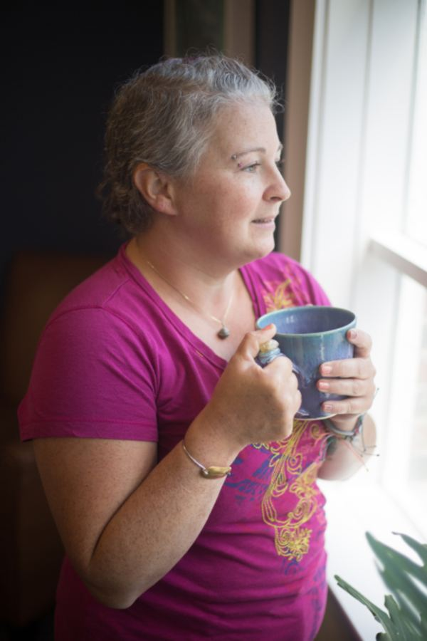
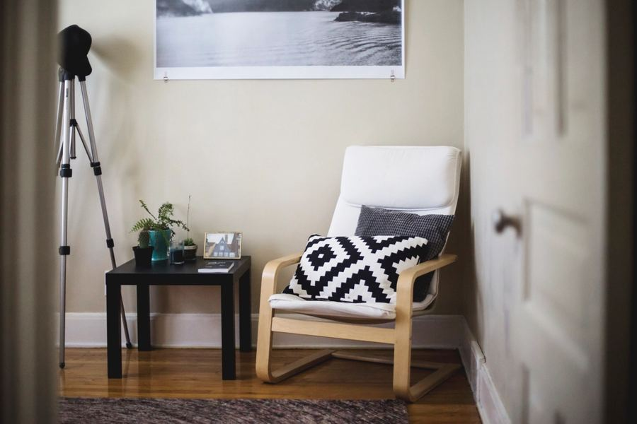
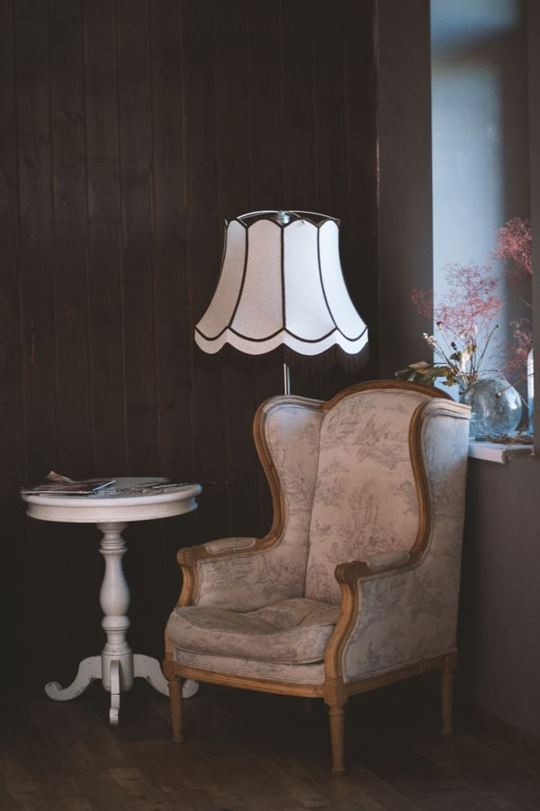

Тревога, выгорание, сложности в отношениях. Работаю онлайн и очно в Гродно. Первая встреча – знакомство без обязательств.

Когда мысли не дают уснуть, а тело живёт в постоянном напряжении.
Когда работа не радует, а сил нет даже на отдых.

Конфликты, одиночество, трудности с близкими и границами.
Когда внутренний критик громче, чем собственные желания.
Клинический психолог, 8 лет практики. Работаю в когнитивно-поведенческом подходе и регулярно прохожу супервизию. Всё, что вы рассказываете, остаётся между нами.
БГУ, психологияКПТСупервизияОнлайн и очно

Тихо, уютно, отдельный вход. Чай и плед – по желанию.
Zoom или Telegram. Нужны только наушники и полчаса тишины.
Долго не решалась позвонить. Записалась через бота в час ночи, и это было проще всего на свете.
Понравилось, что цены и формат видно сразу. Не пришлось ничего выспрашивать и оправдываться.
Бот напомнил про сессию за день. Раньше я дважды забывала и чувствовала себя ужасно.
20 минут онлайн: обсудим запрос и решим, подходим ли друг другу.
50 минут, онлайн или очно.
Для тех, кто готов к регулярной работе.
Это демо сделала Наталья Василенко
Проверьте себя. Если хотя бы два пункта про вас, клиенты уходят к тем, кого просто легче найти.
А так выглядит заявка, которая приходит вам, пока вы на сессии:
Такую визитку и бота записи я сделаю под вас за пару дней. А в NEURO 24/7 рассказываю, как ИИ помогает специалистам находить клиентов.
Визитка + запись на сайте, заявки в Telegram и таблицу. 4–5 дней.
Всё из «Старта» + календарь свободных окон, бот записи с напоминаниями. 7–10 дней.
Хостинг, работа бота 24/7, мелкие правки.
🔥 Первым трём – скидка 30% в обмен на отзыв.